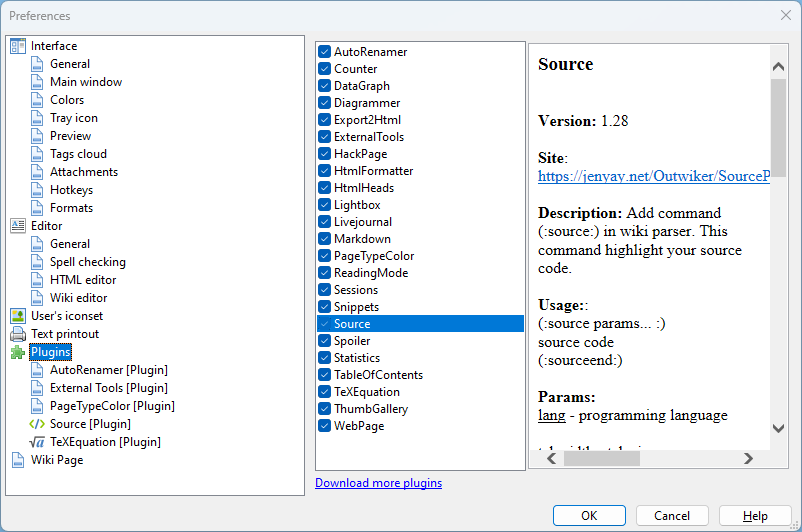

Plugins

The list of the installed plugins can be found in this section. If a plug-in is selected then information pane appears to the right of the list. It contains the following info: plug-in name, version number, short description and link to the plug-in webpage (if exists).
Deselecting check-box against a plug-in allows to disable it (note that the plug-in is not removed!) to have cleaner interface by hiding plugins button bar as well as menu temporarily.